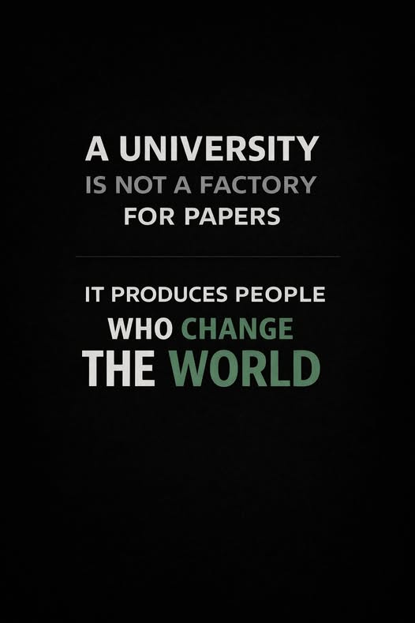

มหาวิทยาลัยไม่ได้มีไว้ผลิต paper แต่มีไว้สร้างคนที่สร้างความรู้ได้
{kind=link}

บทความนี้ตั้งคำถามกับความเชื่อที่ฝังแน่นในมหาวิทยาลัยว่างานวิจัยคือเป้าหมายหลักของสถาบัน โดยเสนอว่าต่อให้เป็นมหาวิทยาลัยวิจัย เป้าหมายหลักก็ยังไม่ใช่งานวิจัยในตัวมันเอง เพราะมหาวิทยาลัยไม่ได้มีไว้เป็นโรงงานผลิต paper แต่มีไว้ผลิตคน โดยเฉพาะนักวิจัยรุ่นใหม่ที่กำลังเริ่มสร้างผลงานระดับจริงจัง
ในกรอบนี้ ผลงานวิจัย จึงควรถูกมองเป็นสิ่งที่เกิดขึ้นระหว่างกระบวนการสร้างคน มากกว่าจะเป็นปลายทางสุดท้ายของระบบ คุณภาพของงานไม่ได้มาจากนิสิตล้วน ๆ แต่เกิดจากระบบกำกับของอาจารย์ ที่พาไปสู่มาตรฐานระดับโลก ขณะเดียวกันอาจารย์เองก็เติบโตขึ้นได้จากการมีนิสิตเก่งรุ่นใหม่เข้ามาอย่างต่อเนื่อง
ความหมายของงานวิจัยในมหาวิทยาลัยจึงต่างจากการวิจัยในระบบอื่น เพราะมันไม่ใช่การทำงานแบบคนเดียวหรือวัดผลเพียงปลายทาง แต่คือกระบวนการสร้างคนแล้วทำงานไปพร้อมกัน ถ้าไม่มีนิสิตรุ่นใหม่เข้ามา ความก้าวหน้าของอาจารย์ก็จะช้าลงอย่างมีนัยสำคัญ และระบบก็จะสูญเสียแรงส่งของการผลิตคนรุ่นถัดไป
เมื่ออาจารย์เติบโต บทบาทก็ขยับจากผู้ทำวิจัยไปสู่เสาหลักของสังคม
เมื่ออาจารย์ทำงานวิจัยมาถึงระดับหนึ่ง บทบาทสำคัญจะไม่ใช่เพียงผู้ทำวิจัย แต่กลายเป็นเสาหลักของสังคม ในการทำสิ่งที่สังคมยังไม่ทำและยังทำไม่ได้ ซึ่งมักเป็นงานวิจัยพื้นฐานหรือโจทย์ระยะยาวที่กำหนดอนาคตของคุณภาพชีวิตทั้งระบบ
ในขณะเดียวกัน งานที่สามารถขายได้หรือสร้างมูลค่าทางเศรษฐกิจโดยตรง เช่น วัคซีนใหม่ พันธุ์พืชทนแล้ง อาหารเฉพาะทาง หรือสิทธิบัตร ไม่ควรถูกนิยามเป็นเป้าหมายหลักของมหาวิทยาลัย เพราะการขยายผลเชิงเศรษฐกิจเป็นบทบาทหลักของภาคเอกชน มากกว่า มหาวิทยาลัยควรเน้นการสร้างความรู้และสร้างคน แล้วส่งต่อให้ระบบอื่นไปขยายผล
ผลผลิตที่สำคัญที่สุดของระบบวิจัยคือบัณฑิตที่ทำวิจัยระดับสูงได้
บทความนี้จึงสรุปอย่างชัดเจนว่า ผลผลิตที่สำคัญที่สุดของระบบวิจัยในมหาวิทยาลัยคือบัณฑิตที่มีคุณภาพและสามารถทำวิจัยระดับสูงได้ ไม่ใช่จำนวน paper เพียงอย่างเดียว งานวิจัยสำคัญมาก แต่สำคัญในฐานะเครื่องมือที่ดีที่สุดในการสร้างคนให้ไปถึงระดับนั้น
ถ้ายังมองมหาวิทยาลัยแบบเดิม มองงานวิจัยแบบเดิม และวัดความสำเร็จแบบเดิม ผลลัพธ์ก็จะไม่ต่างจากเดิม การเปลี่ยนจึงต้องเกิดที่การออกแบบระบบใหม่ให้เห็นชัดว่าเรากำลังสร้างไม่ใช่แค่ผลงาน แต่คือคนที่สร้าง paper และสร้างโลกต่อไป